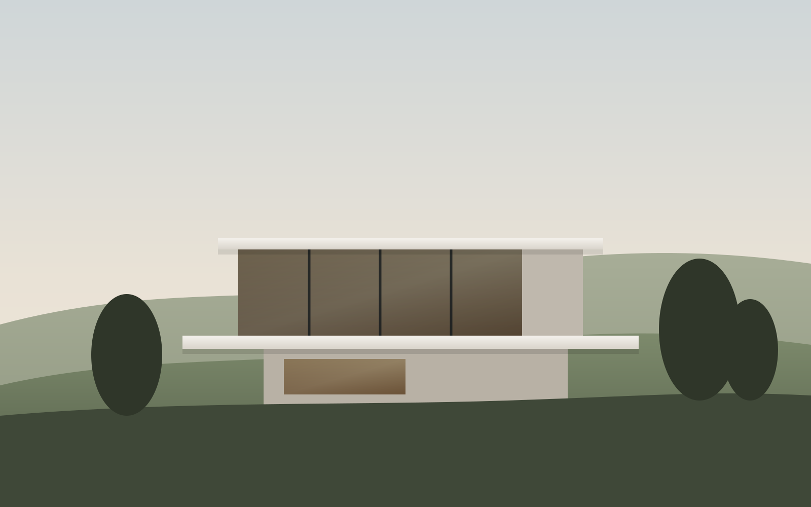
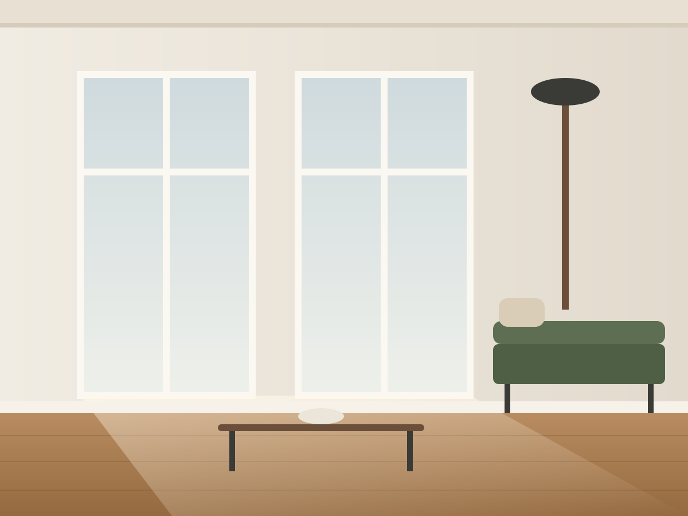
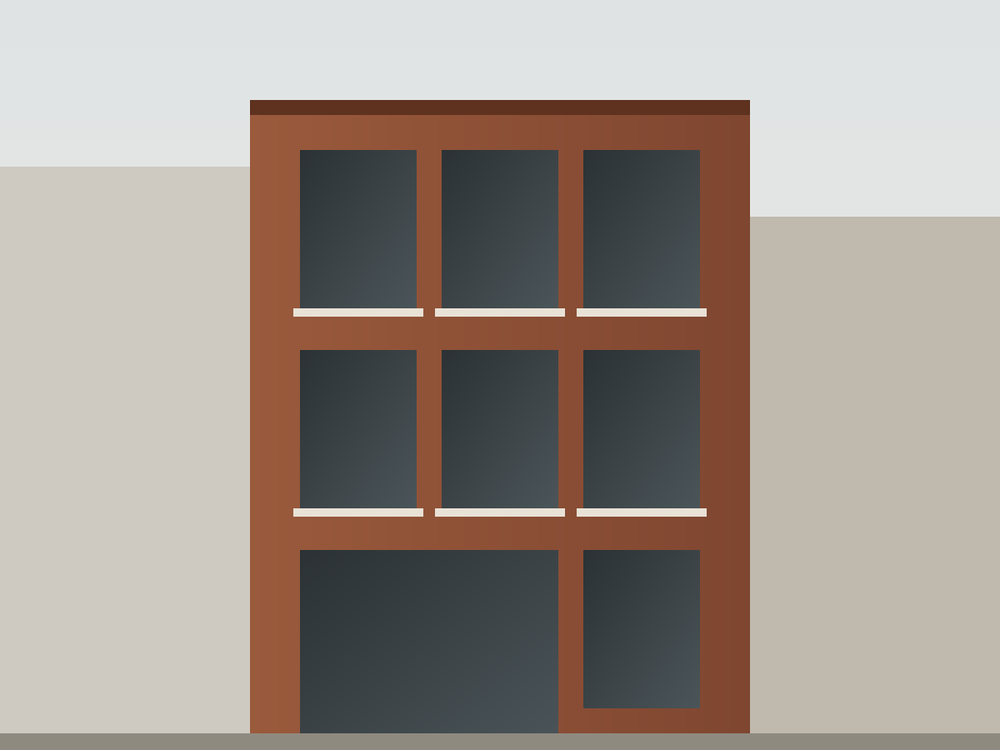
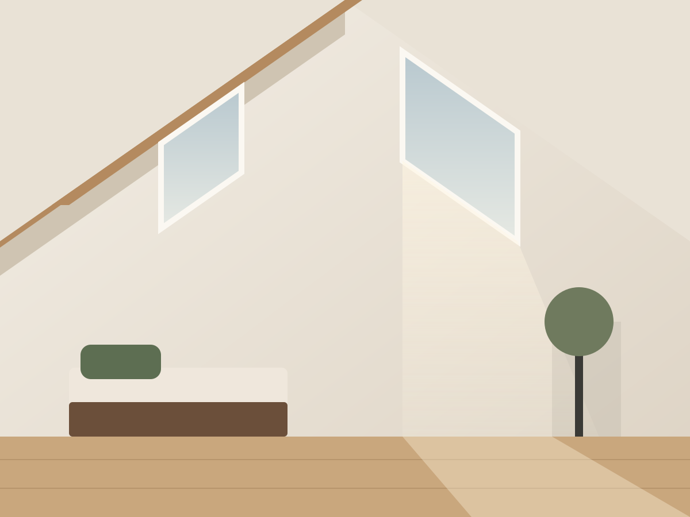
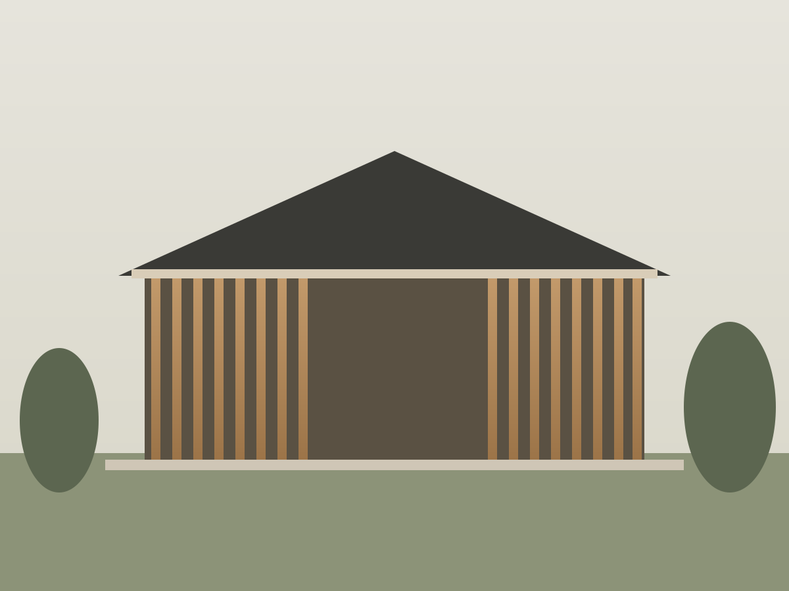
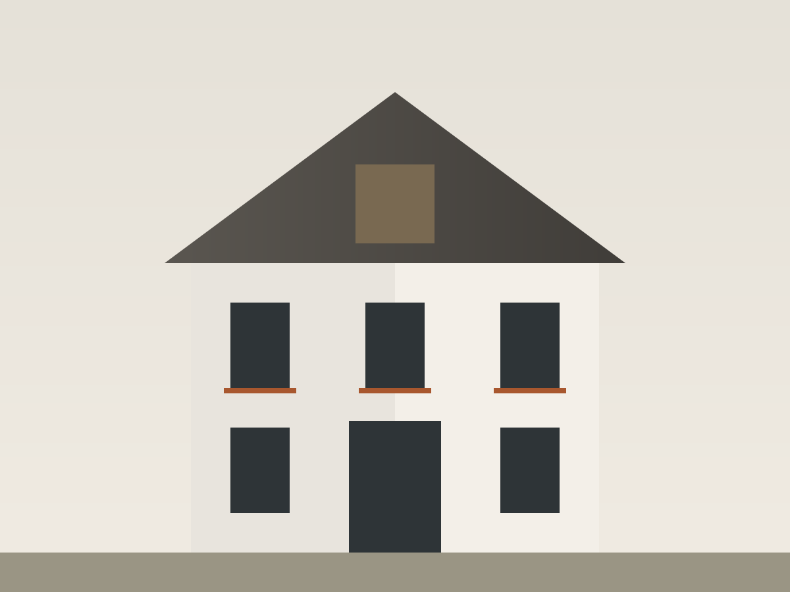

Haus am Hang
Ein Einfamilienhaus, das dem Gelände folgt: zwei Ebenen, eine durchgehende Glasfront und ein weiter Blick über den See.
- Jahr
- 2024
- Größe
- 240 m²
- Leistung
- LPH 1–8
Projekte
Eine Auswahl aus Neubau, Wohnungsumbau und Sanierung. Hinter jedem Projekt stehen Menschen mit eigenen Wünschen. Gerne zeigen wir Ihnen weitere Beispiele im persönlichen Gespräch.

Ein Einfamilienhaus, das dem Gelände folgt: zwei Ebenen, eine durchgehende Glasfront und ein weiter Blick über den See.

Aus vier dunklen Zimmern wurde ein offener Wohnraum mit Licht von zwei Seiten. Stuck und Dielen sind erhalten, Bad und Küche neu.

Zwölf Eigentumswohnungen in einer Baulücke. Die Klinkerfassade nimmt die Nachbarschaft auf, innen bieten die Wohnungen flexible Grundrisse.

Ein ungenutzter Speicher wurde zur Maisonette mit Galerie, sichtbarem Dachstuhl und großen Dachfenstern nach Süden.

Ein Familienhaus in Holzbauweise mit Lärchenlamellen, Satteldach und einem Garten, der bis ins Wohnzimmer reicht.

Energetische Sanierung eines Hauses aus den 1950er-Jahren. Neue Fenster, gedämmte Hülle und eine Wärmepumpe, das Gesicht des Hauses bleibt.
Das erste Gespräch ist kostenlos und unverbindlich, bei uns im Büro oder direkt bei Ihnen vor Ort.
Oder rufen Sie an: 089 123 456 70